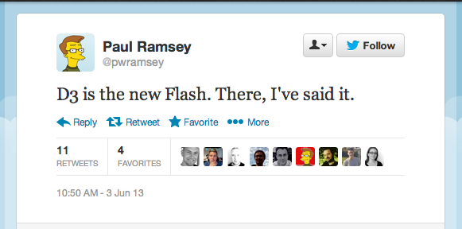

Geospatial Javascript
Christopher Helm
FOSS4G 2013
or
Chris Helm's Love Affair with Javascript and the internet
or
GIS is not dead, it's coming for you and its been drinking Javascript
My Goal
is "GEO FOR ALL"
My Argument
The web is central, JS is essential
why is JS missing?
JS has faults
https://www.destroyallsoftware.com/talks/wat
[] + [] ?
Empty String
[] + {} ?
[object Object]
{} + [] ?
0
{} + {} ?
nil
the web
thinking about how it has evolved
Our perception of JS
has evolved...
Web Evolution
new tech is born everyday
processing tools
data formats
Browsers get Fatter
WebGL
Web Workers
Web Sockets
WebRTC
Usage goes up
the web becomes life
disseminate ideas
share data
visualize
GIS and the web?
GIS must evolve
Javascript is central
leaflet, openlayers, and now d3 (svg)
d3 - data driven docs
SVG / CSS / HTML
"D3 is the new flash..." - Paul Ramsey

"@Turbo3AA9F 'Look at my very beautiful, screen-filling, one-off, data visualization site.' New instrument, same tune." - Paul Ramsey
Freedom for web cartography
Projections
https://github.com/mbostock/d3/wiki/Geo-Projections
http://www.jasondavies.com/maps/transition/
Adaptive Composite Projections
http://bl.ocks.org/jczaplew/6603431
the rise of the API
data has become pervasive/dynamic
we blur the line between client / server
sockets
webRTC
RestHooks
how does GIS adapt?
...slowly
Growing up today?
MapServer? or Leafet? or D3?
Reality check
PostGIS is teh HAWT
What's missing?
topojson
node.js
Package Management
npm
grunt
bower
yeoman
in the end
"Where is ArcView.js?" - a few people, 2 years ago
JS.Geo San Francisco 2014
The Javascript + Geo festival of love conference
Demo stuff
Cost Distance
Walkshed (by atogle @ open plans)https://github.com/atogle/costdistance.js
shapefile.js
https://github.com/calvinmetcalf/shapefile-js
JSTS
A JS port of JTS/GEOS
https://github.com/bjornharrtell/jsts
Shapely.js
https://github.com/chelm/shapely.js
Esri/koop
an open proxy to geo data on github